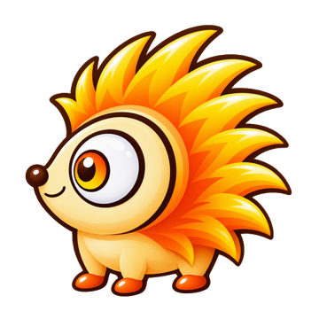

Il Ponte (The Bridge)

A team game for live social streams: the whole chat helps a hedgehog cross a bridge that is collapsing behind it.
What problem it solves
During a live stream you need a game that gets everyone involved together, makes people laugh and asks little of the host. Il Ponte picks the words, keeps time, says thank you and starts again on its own: the host just comments and cheers.
How to play
- Viewers guess words by typing in the chat: every word guessed builds new planks in front of the hedgehog.
- Behind it the bridge collapses one plank at a time. The game ends when the collapse reaches the hedgehog.
- By tapping the screen (the "taps") the audience fills a bar that gives props to stop the collapse at the right moment.
- Gifts protect the hedgehog with bubbles and little umbrellas, but they are never essential: it's the words that carry it to the other side.
- Nobody wins against the others: there's a record distance in metres to beat, all together.
The most interesting ideas
- The game adapts to the audience: the collapse speed follows the pace at which the chat guesses, so it works with many viewers as well as with few.
- Gifts without guilt: no messages like "if you don't donate, it falls". Each gift has a precise, announced effect, no surprise draws.
- A mascot with emotions: the hedgehog changes expression depending on the danger (calm, worried, scared) and falls rolling up into a ball, moments made to be shared.
The hedgehog and its emotions


How it's made
A computer program that opens with a double click, like AgoraWord, and receives the messages from the live stream chat. The animated scene is built with Phaser (a game engine that runs in the browser). The program is split into three separate parts: the game rules, the graphics and the connection to the live stream. The images of the hedgehog and the scene were generated with the help of ChatGPT.
My role
I conceived the game and its rules. The code is written with the help of Claude.
Status
In use in my live social streams.